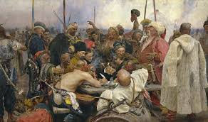

Україна
1. Загальна характеристика
Україна — держава в Східній Європі. Межує з Росією на сході і північному сході, Білоруссю на півночі, Польщею, Словаччиною та Угорщиною на заході, Румунією і Молдовою на південному заході, а також омивається Чорним морем і Азовським морем на півдні та південному сході. Територія України становить 603 700 км², що робить її найбільшою країною, повністю розташованою в Європі. Населення України становить близько 41 мільйона осіб (2021), що робить її восьмою за чисельністю населення країною в Європі. Столиця та найбільше місто — Київ.
2. Історія
Історія України налічує тисячоліття і є однією з найдавніших у Європі. Територія сучасної України була населена здавна, про що свідчать археологічні знахідки. У IX столітті на території України виникло Київське князівство, яке стало основою для формування української нації. Протягом століть Україна перебувала під владою різних імперій, включаючи Литовське князівство, Польське королівство, Російську імперію та Австро-Угорщину. У 1917 році після Лютневої революції в Росії Україна проголосила свою незалежність, але незабаром була втягнута в громадянську війну. У 1922 році Україна стала однією з республік Радянського Союзу. Після розпаду СРСР у 1991 році Україна знову проголосила свою незалежність.
3. Культура
Українська культура має багату історію і різноманітність. Вона включає в себе народні традиції, музику, танці, літературу та мистецтво. Українська народна музика відома своїми мелодіями та інструментами, такими як бандура і кобза. Українська література має багатий спадок, з видатними письменниками, такими як Тарас Шевченко, Іван Франко та Леся Українка. Українська кухня також є важливою частиною культури, з традиційними стравами, такими як борщ, вареники та сало.
4. Природа

Україна має різноманітну природу, включаючи гори, ліси, річки та озера. Карпати на заході країни є популярним місцем для туризму і відпочинку, з мальовничими пейзажами і можливостями для активного відпочинку, такими як лижі та піші походи. На півдні України розташовані Чорне море і Азовське море, які є важливими для рибальства і туризму. Україна також має багато національних парків і заповідників, які охороняють унікальні екосистеми і види рослин і тварин.
5. Економіка
Економіка України є змішаною, з важливою роллю сільського господарства, промисловості та послуг. Україна є одним з найбільших виробників зерна в світі, зокрема пшениці, кукурудзи та ячменю. Промисловість України включає виробництво сталі, машинобудування, хімічну промисловість та енергетику. Послуги, включаючи фінанси, торгівлю та туризм, також є важливою частиною економіки країни. Україна має потенціал для економічного зростання, але стикається з викликами, такими як корупція, політична нестабільність.